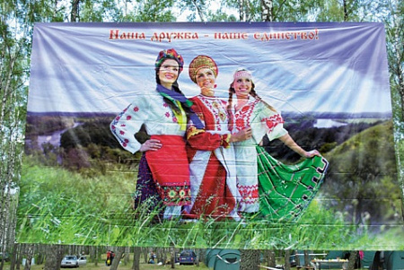
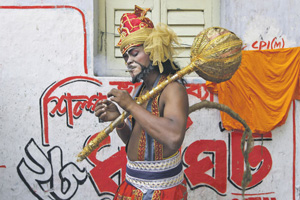

Этносы делятся на этносы
Есть легенда о том, как образовались славянские народы. Жили три брата: Лех, Чех и Рус, каждый со своим родом. Когда потомство их стало многочисленным и жить всем вместе стало тесно, решили братья разойтись в разные стороны, но о родстве своем всегда помнить. Так, по древнему преданию, появились славяне восточные, славяне западные, славяне южные, которые потом, в свою очередь, разделились на отдельные народы.
Мигрировать и не вернуться
В общем-то легенда эта отражает историческую реальность. Да и древнеславянская, и древнегерманская, и кельтская, и индоарийская, и тюркская, и другие метаэтнические общности, состоявшие из многих родственных по происхождению и языку племен, мигрируя и расселяясь по разным регионам, постепенно давали начало новым народам. В первобытную эпоху процессы этнического разделения были главным способом формирования новых племен, а затем и народов. Естественный численный рост существующих племен приводил к их членению и последующему расселению по земному шару. Миграции продолжались и в последующие исторические эпохи, они вели к появлению новых этнических общностей.
Два примера из этнической истории народов России. Якуты, живущие в северо-восточных областях Сибири, связаны по происхождению с племенами, обитавшими на юге Восточной Сибири, в Прибайкалье и Забайкалье, на основе которых сформировался и современный бурятский народ. Часть этих племен мигрировала из Прибайкалья на север, в бассейн реки Лены. Здесь постепенно происходило их смешение с тунгусским населением таежной Сибири. И по сей день в традиционной культуре якутов много черт, которые характерны для населения степного юга Сибири.
На нижней Волге и в ряде других регионов живут калмыки. Их самоназвание – хальмг – означает буквально «остаток» (другое толкование – «отставший», «отделившийся»). Предки калмыков, западные монголы ойраты, жили в западных провинциях Китая. В начале XVII века в этом регионе сложилась напряженная ситуация (феодальные распри, народные волнения). И вот часть ойратов, не принявших ислам, ушла из Китая и, пройдя через всю Среднюю Азию, вышла в низовья Волги. Здесь ойраты, ставшие новым народом – калмыками, заняли территорию, на которой ныне расположена Республика Калмыкия – Хальмг Тангч. Религия большинства верующих калмыков – буддизм (ламаизм).
Если обратиться к этнической истории Африки, надо прежде всего сказать о формировании в центральной части этого континента в течение многих столетий, начиная с древности, на основе бантуязычной макрообщности множества отдельных бантуязычных этносов. Миграции скотоводов – луо в начале II тысячелетия с верховьев Нила в Межозерье, а в XV–XVII веках на территорию современной Кении – сопровождались их разделением на ряд этносов. В XIX веке часть южноафриканских племен нгони мигрировала на север, в регион озера Ньяса и озера Виктория, другая часть – на северо-восток (на территорию нынешнего Малави). Так образовалось несколько этносов. Большинство нгони утратили свой язык и говорят на языках суахили, ньянджа и других. В Кении уже в ХХ веке от народа гишу отделились этносы масаба и букусу.
Вы из каких франков будете?
В эпоху раннеклассового общества распад крупных политических образований сопровождался этническим разделением. Классический пример такого процесса – формирование на основе древнерусского этноса (после распада в XII веке Древнерусского государства) трех родственных восточнославянских народов – русских, украинцев и белорусов. Политический раздел Франкского государства (IX век) сопровождался этноразделением франкской метаобщности: западные франки вошли во французский этнос, восточные – в немецкий. Конечно, эти процессы заняли многие столетия.
В новое и новейшее время этноразделительные процессы продолжали играть заметную роль лишь в отдельных регионах и странах мира. Новые этносы формировались при переселении европейцев в Америку, Африку, Австралию, другие регионы. При этом процессы этнической сепарации сопровождались, дополнялись процессами ассимиляции, интеграции других этнических групп, последующей консолидации разноэтничного населения в новые этнические общности – народы с новым, особым самосознанием, объединявшим всех членов каждой такой общности. Некоторые такие ситуации я рассмотрел в очерке «Рождение этнического самосознания» (см. «НГ-наука» от 11.09.13).
Вот еще один интересный пример этнической сепарации – формирование особой франкоязычной общности в Новой Каледонии. Этот крупный остров в юго-западной части Тихого океана (в Меланезии) был открыт Дж. Куком в 1774 году, в 1853 году аннексирован Францией; с 1946 года имеет статус ее «заморской территории» (она включает кроме Новой Каледонии архипелаг Луайоте и ряд других островов). Аборигены – меланезийцы (канаки). В 1863–1894 годах остров был колонией для ссыльных. Но с конца XIX века многие французы стали переселяться сюда для ведения своего хозяйства. Сейчас их около 85 тыс. человек при общей численности населения 230 тыс. (в 2010 году). Большинство из них – это первое, второе, третье, четвертое и даже пятое поколения потомков – выходцев из Франции.
Для этих людей родина – именно Новая Каледония, при том что они могут любить и ценить свою историческую родину. Говорят они по-французски (это и официальный язык территории). Но у них сложились свои культурно-бытовые и психологические особенности, появилось особое самоназвание – франконовокаледонцы (аборигены и другие жители острова называют их «кальдоши»). Вряд ли они уже сложились в особый этнос, скорее это этнографическая группа французов. Однако, бесспорно, можно говорить о начальном этапе формирования отдельного франкоязычного этноса. Частью его является группа метисов – результат брачных и внебрачных связей французских колонистов с меланезийскими женщинами.
А теперь – этнополитика
Особый вариант этнической дифференциации – этнополитическая сепарация, когда территория с более или менее единообразным, родственным в культурно-языковом, этническом отношении населением разрезается государственными границами. Так, во II тысячелетии в Центральной Европе образовались немецкоязычные этносы: немцы, австрийцы, германо-швейцарцы, эльзасцы (и близкородственные им лотарингцы), люксембуржцы, лихтенштейнцы.
В XIX веке после войны за независимость испанских колоний в Центральной и Южной Америке формировались испаноязычные этносы: мексиканцы, кубинцы, доминиканцы, эквадорцы, пуэрториканцы, сальвадорцы, гондурасцы, гватемальцы, никарагуанцы, костариканцы, панамцы, аргентинцы, перуанцы, чилийцы, венесуэльцы, колумбийцы, уругвайцы, боливийцы. Здесь явственно проявляется роль государственности и политических границ как мощного, активного этнообразующего фактора. Немало примеров этого дал нам и ХХ век.
В июне 1947 года на территории британской колониальной империи в Южной Азии были созданы два независимых государства – Индия и Пакистан. Раздел был произведен по религиозному принципу. В состав Пакистана вошли области с преобладанием мусульманского населения. Страна состояла из двух разобщенных территорий – Западного Пакистана и Восточного Пакистана (Восточной Бенгалии). В Индии же был образован штат Западный Бенгал, в котором жили бенгальцы-индуисты.
Важно отметить, что бенгальцы, несмотря на различные религиозные традиции (ислам и индуизм), несмотря на многочисленные кастовые перегородки, уже в конце XIX – начале XX века были довольно цельным этносом с сознанием своей исторической общности. Бенгальская интеллигенция активно выступала против колониальных порядков, за национальное освобождение. Но государственно-политическое разделение бенгальского народа в середине XX века обусловило появление тенденции к формированию двух бенгальских этнических общностей – западных бенгальцев и восточных бенгальцев.
Национально-освободительная борьба восточных бенгальцев против политического диктата и экономической монополии крупной западно-пакистанской буржуазии привела к отделению в марте 1971 года Восточного Пакистана, на территории которого была образована независимая Республика Бангладеш. Создание восточными бенгальцами своей государственности активизировало процесс формирования новой этнонации – бангладешцев (восточных бенгальцев). Так произошло разделение бенгальского этноса на две этнонации.
Тогда же, при государственном размежевании 1947 года, историческая область Панджаб (коренное население – панджабцы) была разделена на провинцию Панджаб в Пакистане и два штата в Индии. Пакистанские панджабцы (их 75% всего народа) по религии мусульмане; индийские панджабцы – индуисты и сикхи. Сейчас, в начале XXI века, можно констатировать: это два отдельных этноса.
Расщепленный архипелаг
Бенгальцы, несмотря на различные религиозные традиции и кастовые перегородки, уже в конце XIX – начале XX века были довольно цельным этносом. Фото Reuters
На пути к разделению на два этноса и полинезийский народ самоа, коренное население островов Самоа (в юго-западной части Тихого океана, на западе Полинезии). Накануне европейской колонизации архипелага шел процесс консолидации самоанских племен в единый этнос, особенно интенсивный в XIX веке, когда у них складывалось раннегосударственное образование. Колониальное господство Великобритании, Германии, Новой Зеландии и США (с конца XIX века) усложнило этот процесс.
Восточное Самоа (Американское Самоа) – владение США с 1899 года (ныне в статусе «неинкорпорированной территории»). Население – около 60 тыс. человек, 90% из них – самоа. Официальный язык – английский, в быту – самоанский и английский.
Западное Самоа – независимое государство с 1 января 1962 года, член британского Содружества (до окончания Первой мировой войны – колония Германии, затем мандатная, с 1946 года – подопечная территория Новой Зеландии). Государственные языки – самоанский и английский. В бытовом общении самоанцев доминирует их родной язык. Письменность на нем (на базе латиницы) создана в 1834 году. В стране проживают 180–190 тыс. человек, подавляющее большинство из них самоа. Это один из самых крупных полинезийских народов. Более 10% из них – европолинезийские метисы. Много лиц смешанного происхождения – это потомки самоа и выходцев с других островов Полинезии.
Более чем столетнее политическое разделение архипелага привело к обособлению в культурно-бытовой сфере у западных и восточных самоа. Восточные более «вестернизованы», почти все они двуязычны. Скорее всего в ближайшем будущем уже можно будет констатировать существование двух отдельных самоанских общностей.
В западной части Тихого океана расположен большой мир небольших и совсем маленьких островов, объединяемых названием Микронезия. Часть Микронезии – это «неинкорпорированная территория» США (фактически их владение) Тихоокеанские острова; включает острова Каролинские, Маршалловы и Марианские (северная часть, без острова Гуам). Марианские острова были открыты экспедицией Магеллана в 1521 году. В 1898 году США во время испано-американской войны захватили самый крупный из Марианских островов – Гуам (ныне также в статусе «неинкорпорированной территории» США). В 1899 году Испания продала Германии все остальные принадлежавшие ей острова Микронезии. С начала Первой мировой войны острова были захвачены Японией. В 1944 году они были заняты войсками США и в 1947 году стали Подопечной территорией США.
Коренное население Марианских островов (в том числе и Гуама) – микронезийцы-чаморро. Их около 100 тыс. человек, в том числе на Гуаме – 75–80 тыс. Почти все они – метисы, потомки аборигенов, смешавшихся с испанцами и служившими в испанских войсках филиппинцами и мексиканцами. Однако они сохранили свой язык и свое самоназвание.
В результате длительного раздельного политического и этнокультурного бытия чаморро Гуама заметно отличаются от чаморро Северных Мариан. У северных чаморро до сих пор живы многие элементы испанской колониальной культуры (Марианы несколько столетий были владением Испании). У гуамцев в эту культуру за более чем столетие вросло многое из американской бытовой культуры. Гуамцы более метисированы, чем северные чаморро. Фактически это две разные этнические группы. Чаморро Гуама и называют себя преимущественно гуамцами, хотя помнят и свое исконное наименование.
При чем тут капитализм и социализм
Западное Самоа – независимое государство с 1 января 1962 года, член британского Содружества (до окончания Первой мировой войны – колония Германии, затем мандатная, с 1946 года – подопечная территория Новой Зеландии). Государственные языки – самоанский и английский. В бытовом общении самоанцев доминирует их родной язык. Письменность на нем (на базе латиницы) создана в 1834 году. В стране проживают 180–190 тыс. человек, подавляющее большинство из них самоа. Это один из самых крупных полинезийских народов. Более 10% из них – европолинезийские метисы. Много лиц смешанного происхождения – это потомки самоа и выходцев с других островов Полинезии.
Более чем столетнее политическое разделение архипелага привело к обособлению в культурно-бытовой сфере у западных и восточных самоа. Восточные более «вестернизованы», почти все они двуязычны. Скорее всего в ближайшем будущем уже можно будет констатировать существование двух отдельных самоанских общностей.
В западной части Тихого океана расположен большой мир небольших и совсем маленьких островов, объединяемых названием Микронезия. Часть Микронезии – это «неинкорпорированная территория» США (фактически их владение) Тихоокеанские острова; включает острова Каролинские, Маршалловы и Марианские (северная часть, без острова Гуам). Марианские острова были открыты экспедицией Магеллана в 1521 году. В 1898 году США во время испано-американской войны захватили самый крупный из Марианских островов – Гуам (ныне также в статусе «неинкорпорированной территории» США). В 1899 году Испания продала Германии все остальные принадлежавшие ей острова Микронезии. С начала Первой мировой войны острова были захвачены Японией. В 1944 году они были заняты войсками США и в 1947 году стали Подопечной территорией США.
Коренное население Марианских островов (в том числе и Гуама) – микронезийцы-чаморро. Их около 100 тыс. человек, в том числе на Гуаме – 75–80 тыс. Почти все они – метисы, потомки аборигенов, смешавшихся с испанцами и служившими в испанских войсках филиппинцами и мексиканцами. Однако они сохранили свой язык и свое самоназвание.
В результате длительного раздельного политического и этнокультурного бытия чаморро Гуама заметно отличаются от чаморро Северных Мариан. У северных чаморро до сих пор живы многие элементы испанской колониальной культуры (Марианы несколько столетий были владением Испании). У гуамцев в эту культуру за более чем столетие вросло многое из американской бытовой культуры. Гуамцы более метисированы, чем северные чаморро. Фактически это две разные этнические группы. Чаморро Гуама и называют себя преимущественно гуамцами, хотя помнят и свое исконное наименование.